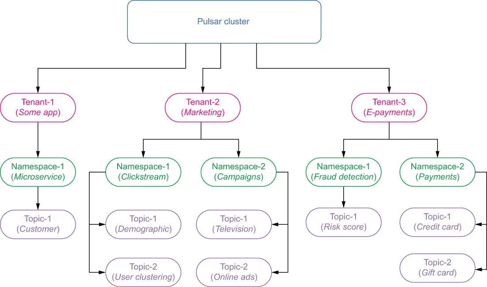
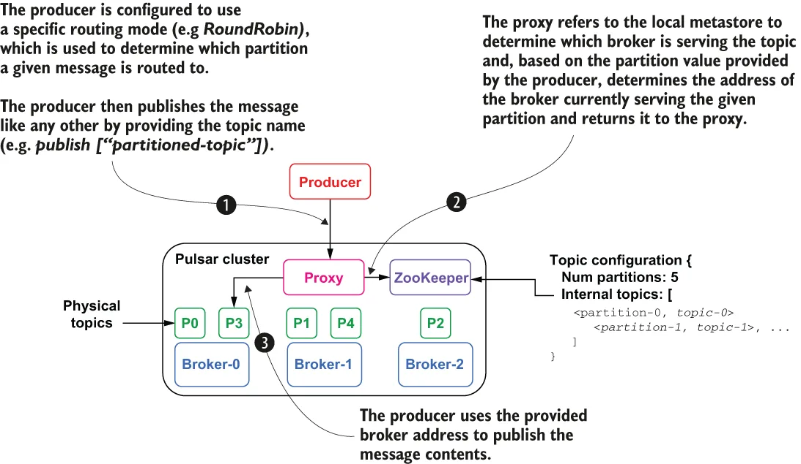

In this section we will cover the logical constructs that describe how data is structured and stored inside the cluster. Pulsar was designed to serve as a multi-tenant system, allowing it to be shared across multiple departments within your organization by providing each its own secure and exclusive messaging environment. This design enables a single Pulsar instance to effectively serve as the messaging platform-as-a-service across your entire enterprise. The logical architecture of Pulsar supports multitenancy via a hierarchy of tenants, namespaces, and, finally, topics, as shown in figure 2.8.
在本节中，我们将介绍那些描述数据在集群内部如何组织和存储的逻辑结构。Pulsar 被设计为一个多租户系统，通过为组织内的每个部门提供各自安全且专属的消息环境，使其能够在多个部门之间共享。这种设计使单个 Pulsar 实例能够有效地充当整个企业范围内的消息平台即服务。Pulsar 的逻辑架构通过租户、命名空间、最后是主题这样的层级结构来支持多租户，如图 2.8 所示。

Figure 2.8 Pulsar’s logical architecture consists of tenants, namespaces, and topics.
图 2.8 Pulsar 的逻辑架构由租户、命名空间和主题构成。
Tenants
租户
At the top of the Pulsar hierarchy sit the tenants, which can represent a specific business unit, a core feature, or a product line. Tenants can be spread across clusters and can each have their own authentication and authorization scheme applied to them, thereby controlling who has access to the data stored within. They are also the administrative unit at which storage quotas, message time to live, and isolation policies can be managed.
位于 Pulsar 层级结构顶端的是租户，它可以代表某个特定的业务单元、一项核心功能或一条产品线。租户可以跨集群分布，并且每个租户都可以应用各自的认证与授权方案，从而控制谁有权访问其中存储的数据。租户也是可以管理存储配额、消息存活时间（TTL）和隔离策略的管理单元。
Namespaces
命名空间
Each tenant can have multiple namespaces, which are logical grouping mechanisms for administering related topics via policies. At the namespace level, you can set access permissions, fine-tune replication settings, manage geo-replication of message data across clusters, and control message expiry for all the topics in the namespace.
每个租户可以拥有多个命名空间，它们是通过策略来管理相关主题的逻辑分组机制。在命名空间级别，你可以设置访问权限、微调复制设置、管理消息数据跨集群的跨地域复制，以及控制命名空间中所有主题的消息过期。
Let’s consider how we would structure Pulsar’s namespace for an e-commerce application. To provide isolation for the sensitive incoming payment data and limit access to only members of the finance team, you may configure a separate tenant named E-payments, as shown in figure 2.8, and apply an access policy that restricts full access to only members of the finance group so they can perform audits and process credit card transactions.
让我们考虑如何为一个电商应用组织 Pulsar 的命名空间。为了对敏感的传入支付数据进行隔离，并把访问权限限定给财务团队的成员，你可以配置一个名为 E-payments 的独立租户，如图 2.8 所示，并应用一条访问策略，把完全访问权限限制在财务组的成员之内，以便他们执行审计并处理信用卡交易。
Within the E-payments tenant you might create two namespaces: one named payments that will hold the incoming payments, including credit card payments and gift card redemptions, and another named fraud detection, which will contain those transactions that are flagged as suspicious for further processing. In such a deployment, you would limit the user-facing application to write-only access to the payments namespace, while granting read-only access to the fraud detection application, so it can evaluate them for potential fraud.
在 E-payments 这个租户内，你可能会创建两个命名空间：一个名为 payments，用于存放传入的支付，包括信用卡支付和礼品卡兑换；另一个名为 fraud detection，用于容纳那些被标记为可疑、需要进一步处理的交易。在这样的部署中，你会把面向用户的应用限制为对 payments 命名空间只有写权限，同时授予欺诈检测应用只读权限，使其能够评估这些交易是否存在欺诈可能。
On the fraud detection namespace you would configure write access for the fraud detection application, so it can place potentially fraudulent payments into the “risk score” topic. You would also grant read-only access to the e-commerce application to the same namespace, so it can be notified of any potential fraud and react accordingly, such as by blocking the sale.
在 fraud detection 这个命名空间上，你会为欺诈检测应用配置写权限，使其能够把可能存在欺诈的支付放入 "risk score" 主题。你还会授予电商应用对同一命名空间的只读权限，使其能够获知任何潜在的欺诈并作出相应反应，例如阻止这笔交易。
Topics
主题
Topics are the only communication channel type available in Pulsar. All messages are written to and read from topics. Other messaging systems support more than one communication channel type (e.g., topics and queues that are differentiated by the type of message consumption they support). As I discussed in chapter 1, queues support first in, first out exclusive message consumption, while topics support pub-sub, one-to-many message consumption. Pulsar makes no such distinction and, instead, relies on various subscription types to control the message consumption pattern.
主题是 Pulsar 中唯一可用的通信通道类型。所有消息都写入主题并从主题读取。其他消息系统支持不止一种通信通道类型（例如主题和队列，它们按所支持的消息消费类型来区分）。正如我在第 1 章中讨论过的，队列支持先进先出的独占式消息消费，而主题支持发布-订阅式的一对多消息消费。Pulsar 不作此类区分，而是依靠各种订阅类型来控制消息消费模式。
In Pulsar, non-partitioned topics are served by a single broker, which is responsible for receiving and delivering all the messages for the topic. Therefore, the throughput of a single topic is bound by the computing power of the broker serving it.
在 Pulsar 中，非分区主题由单个 broker 提供服务，该 broker 负责接收和投递该主题的全部消息。因此，单个主题的吞吐量受限于为它提供服务的那台 broker 的计算能力。
Partitioned topics
分区主题
Pulsar also supports the notion of partitioned topics that can be served by multiple brokers, which allows for much higher throughput as the load is distributed across multiple machines. Behind the scenes, a partitioned topic is implemented as N internal topics, where N is the number of partitions. The distribution of partitions across brokers is handled automatically by Pulsar, effectively making the process transparent to the end user.
Pulsar 还支持分区主题的概念，它可以由多个 broker 提供服务；由于负载被分散到多台机器上，这带来了高得多的吞吐量。在幕后，一个分区主题被实现为 N 个内部主题，其中 N 是分区的数量。分区在各 broker 之间的分布由 Pulsar 自动处理，实际上使这一过程对终端用户透明。
Implementing partitioned topics as a series of individual topics allows a user to increase the number of partitions without having to rebalance the entire topic. Instead, internal topics are created for the new partitions and will be able to receive incoming messages immediately without impacting the other internal topics at all (e.g., consumers will still be able to read/write messages to the existing partitions without interruption).
把分区主题实现为一系列独立的主题，使用户无需对整个主题做再均衡就可以增加分区数量。取而代之的是，新的分区会创建出对应的内部主题，并且能够立即接收传入的消息，而完全不影响其他内部主题（例如，消费者仍然可以不中断地对现有分区读写消息）。
From a consumer perspective, these is no difference between partitioned topics and normal topics. All consumer subscriptions work exactly as they do on non-partitioned topics. But there is a big difference in what happens when a message is published to a partitioned topic. The message producer is responsible for determining which internal topic the message is ultimately published to. If the message has a value in its key metadata field, then the producer will hash that value to determine which topic to publish to. This ensures that all messages with the same key get stored in the same topic and will be in the order in which they were published.
从消费者的角度看，分区主题与普通主题之间没有区别。所有消费者订阅的工作方式都与在非分区主题上完全相同。但当消息被发布到分区主题时，情况就有很大不同了。消息生产者负责决定该消息最终被发布到哪个内部主题。如果消息的 key 元数据字段中有值，那么生产者会对该值进行哈希，以确定要发布到哪个主题。这确保了所有具有相同 key 的消息都会被存放在同一个主题中，并保持它们被发布时的顺序。
When publishing a message without a key, the producer should be configured with a routing mode that specifies how to route messages across the partitions in the topic. The default routing mode is called RoundRobinPartition, which as the name implies, publishes messages across all partitions in round-robin fashion. This approach evenly distributes the messages across the partitions, which maximizes the publish throughput. Alternatively, you could use the SinglePartition routing mode, which randomly selects a single partition to publish all its messages into. This approach can be used to group messages from a specific producer together to maintain message ordering when you don’t have a key value. You can also provide your own routing implementation as well if you need more control over message distribution across your partitioned topic.
当发布一条没有 key 的消息时，生产者应当被配置一个路由模式，用以指定消息如何在主题的各个分区之间路由。默认的路由模式称为 RoundRobinPartition，顾名思义，它以轮询的方式把消息发布到所有分区上。这种方式把消息均匀分布到各个分区，从而使发布吞吐量最大化。另一种选择是使用 SinglePartition 路由模式，它随机选择一个分区，把所有消息都发布到该分区。这种方式可用于在没有 key 值的情况下，把来自某个特定生产者的消息归拢到一起，以维持消息顺序。如果你需要对消息在分区主题上的分布有更强的控制力，也可以提供自己的路由实现。
Let’s look at the message flow depicted in figure 2.9 in which the producer is configured to use the RoundRobinPartition publish mode. In this scenario, the producer connects to the Pulsar proxy and expects back the IP address of the broker assigned to the topic it is writing to. The proxy, in turn refers to the local metastore for this information and discovers that the topic is partitioned and needs to translate the specified partition number into the name of the internal topic that is serving that partition.
让我们来看图 2.9 中所描绘的消息流，其中生产者被配置为使用 RoundRobinPartition 发布模式。在这个场景中，生产者连接到 Pulsar proxy，并期望拿回被分配给它正在写入的那个主题的 broker 的 IP 地址。proxy 转而查询本地元数据存储来获取该信息，并发现该主题是分区主题，需要把指定的分区号转换为为该分区提供服务的内部主题的名称。

Figure 2.9 Publishing to a partitioned topic
图 2.9 发布到分区主题
In figure 2.9, the producer’s round-robin routing strategy determined that the message should be published to partition number 3, which is implemented as internal topic p3. The proxy can also determine that internal topic p3 is currently being served by broker-0. Therefore, the message is routed to that broker and written to the p3 topic. Since the routing mode is round robin, a subsequent call by the same producer will result in the message being routed to the p4 internal topic on broker-1.
在图 2.9 中，生产者的轮询路由策略判定该消息应被发布到 3 号分区，该分区被实现为内部主题 p3。proxy 还能确定内部主题 p3 当前正由 broker-0 提供服务。因此，该消息被路由到那台 broker 并写入 p3 主题。由于路由模式是轮询，同一生产者随后的一次调用会使消息被路由到 broker-1 上的内部主题 p4。